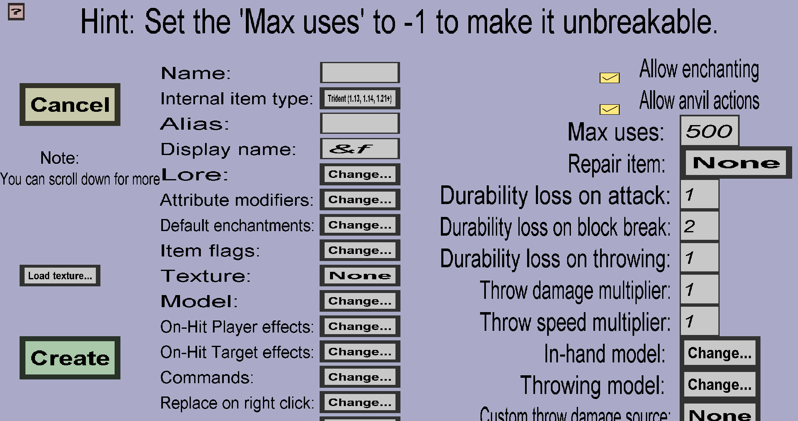

The trident edit menu can be used to modify or create custom tridents. Note that custom tridents can only be used if the minecraft version of the server is at least 1.13 (because tridents were added in minecraft 1.13). It should look like this:
This menu has all properties the tool edit menu has, but 2 extra item models, an extra durability loss field and fields for throwing speed and thrown damage.
Contrary to most other custom items, custom tridents need 3 item models: 1 for the base model, 1 for the in-hand model and 1 for the model during throwing. Note that you need to scroll down a little with your mouse wheel or arrow keys because the throwing model is just a partially 'below' the menu. Unfortunately, there is no model for when the trident is actually thrown: they will then look like a normal trident and it looks like there is nothing I can do about that.
If you don't want to write your own item models, you can 'choose' the default models I write by simply ignoring the models completely. To use my default models, you should use the following texture as the shape for your texture:

To download it, you should right-click the image above and choose something that looks like 'Save as...' (the exact text depends on your browser). You should probably change the colors of that image (and increase the resolution if you need more detail). Regarding the shape: my default models will 'stretch' the image vertically for the in-hand and throwing models to give them a nice long shape in-game.
If you wish to create your own item models, you need to click on the 'Change...' buttons on right of the 'Model:', 'In-hand model' and 'Throwing model' to change the respective models. It's not so different from configuring custom item models for simple custom items, you just need to make 3 instead of 1.
This is the amount of durability the custom trident will lose whenever it's thrown by a player. It works similarly to the other durability losses as described in the tool edit menu.
The Throw damage multiplier affects the damage dealt when throwing this custom trident at mobs or players. The damage the target will take upon being hit by a thrown custom trident is the product of the Throw damage multiplier and the damage a normal trident would have dealt. So if you set the Throw damage multiplier to 2, the custom trident will deal twice as much damage as a normal trident when it's thrown. This will not affect when the trident is being used as melee weapon (if you want to change that damage, use attribute modifiers just like with custom swords).
The Throw speed multiplier affects the speed of this custom trident when it is thrown. The speed of the thrown custom trident right after it leaves the hand of the thrower will be the product of the Throw speed multiplier and the speed it would have if it were a normal trident. So changing this Throw speed multiplier to 0.5 would let your custom trident fly twice as slow as a normal trident.